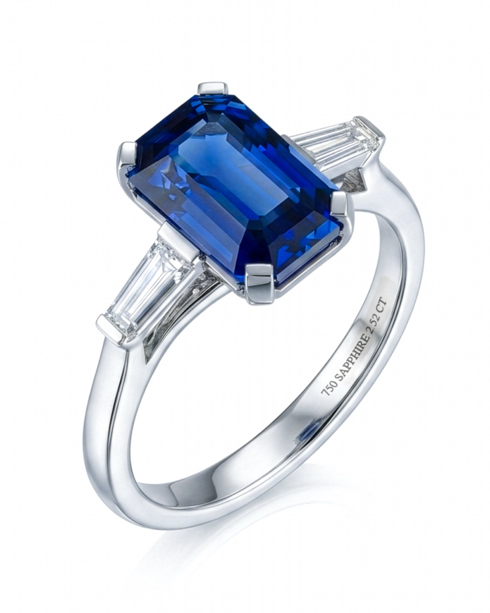
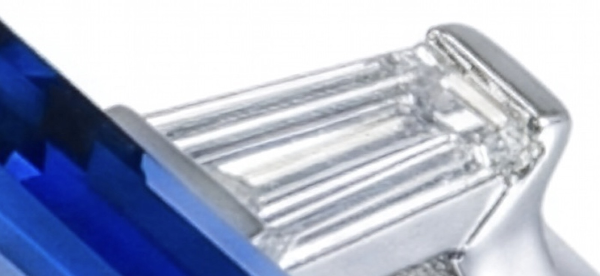
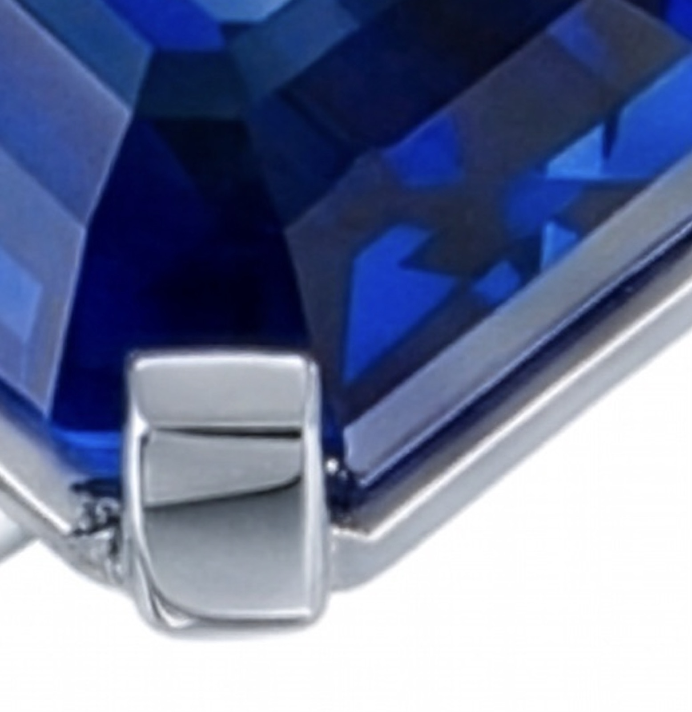
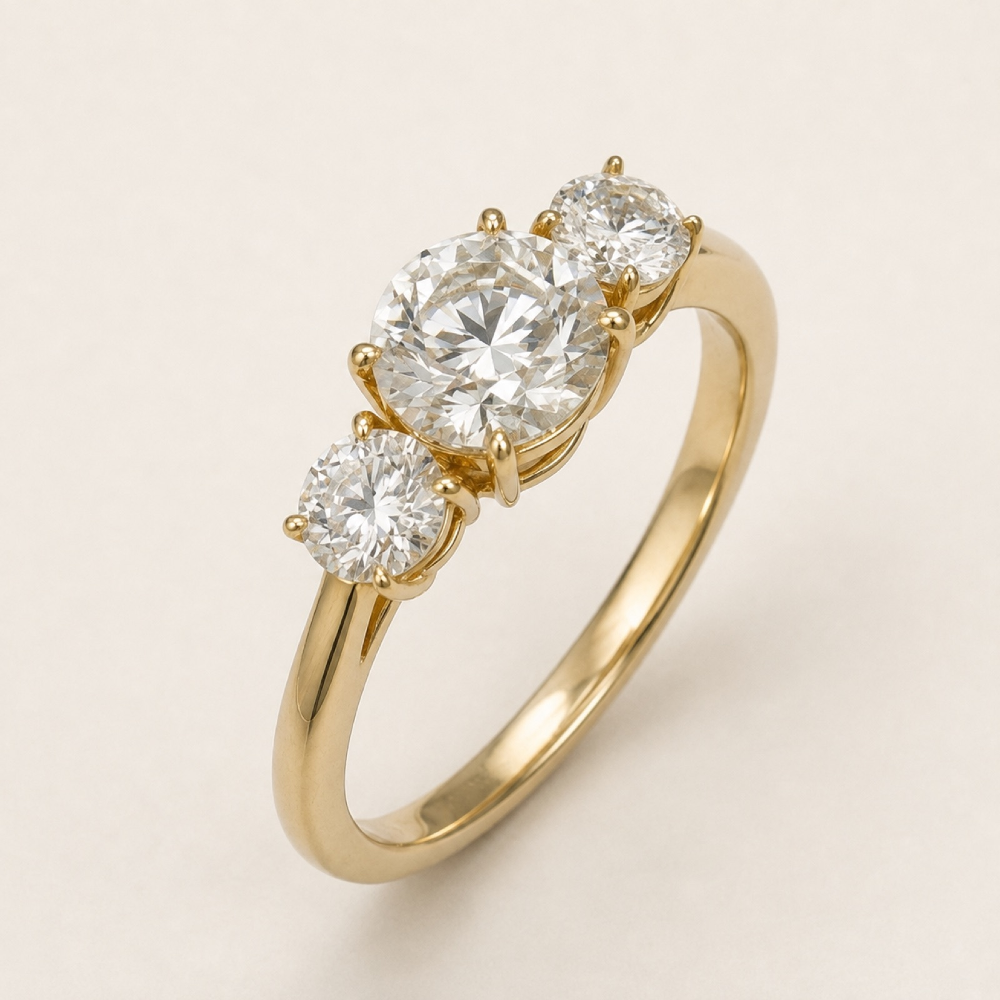
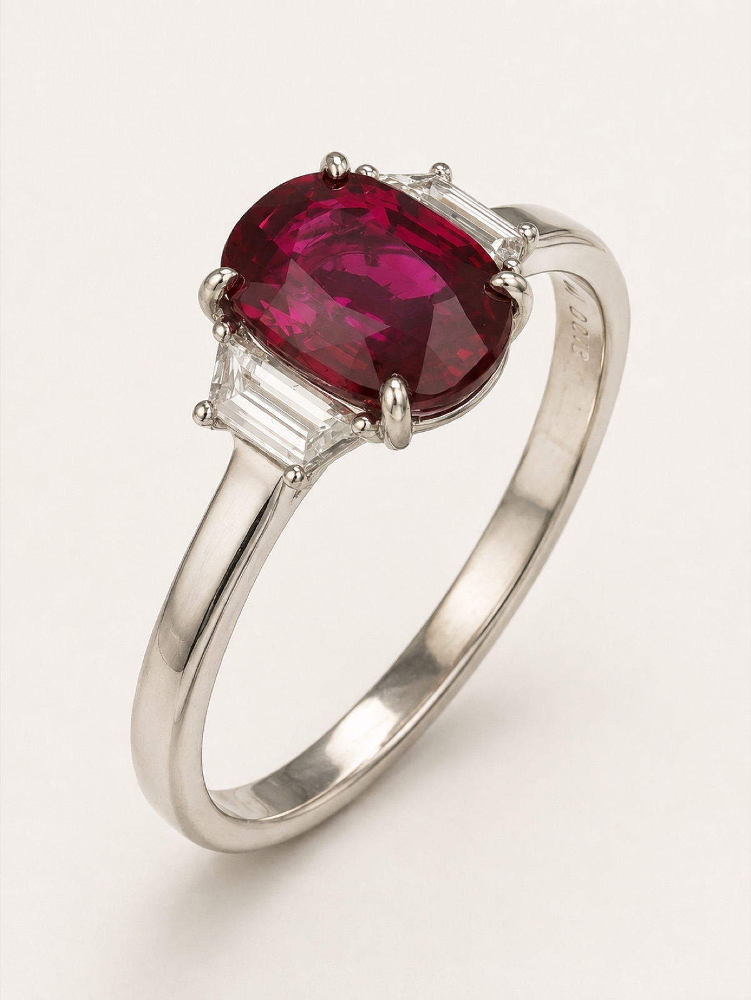

Bespoke fine jewellery, hand made, never with concessions







The Ideation
No. 01 of 05
Through a personal conversation, the initial idea takes form
The Canvas
No. 02 of 05
Each design begins with the careful selection of the center stone
The Composition
No. 03 of 05
The design comes alive through a sketch
The Frame
No. 04 of 05
Craftsmanship in metal binds the canvas and the composition
The Hanging
No. 05 of 05
The finished jewel is presented: an extension of the body
Sapphire Ring
No. 01 of 03
2.52ct emerald-cut sapphire, tapered baguette diamonds, platinum
Sapphire Ring
No. 01 of 03
Detail of the baguette diamond setting
Sapphire Ring
No. 01 of 03
Detail of the sapphire and gallery
Diamond Ring
No. 02 of 03
Three-stone round brilliant diamonds, 18k yellow gold
Ruby Ring
No. 03 of 03
Oval ruby with tapered baguette diamond accents, platinum
Every piece begins with a single stone
Hover — or tap — a stone to learn its story
Discover the process →Location
Amsterdam, The Netherlands
Bangkok, Thailand
Services
Bespoke jewellery
Sourcing of specialty stones
The stone comes first
Most jewellery starts with a design and then finds a stone to fill it. I work the other way round. I find a stone worth building for, colour, character, something that isn't in every window, and the design follows from what it actually is. It's slower, and it's the only way I know to end up with a piece that couldn't have been anyone else's.
I've seen coloured stones at nearly every point in the chain. Sorting emeralds at the mine in Zambia and making up parcels for tender. The tourmaline pits of Paraiba, and the markets of Sri Lanka, Thailand and Burma. Grading benches in Antwerp. Auction rooms in London and Amsterdam, where a piece has to be understood before it can be valued. Production floors in Bangkok, where a drawing becomes an object.
Very few people see a stone at every stage between the ground and the hand that wears it. That's what I'm actually selling, not a prettier sapphire, but the judgement to know which one is worth the setting, and the honesty to tell you when a stone isn't.
The work is made in Bangkok, in a workshop that has spent two decades producing for some of the largest jewellery houses in the world. The same benches, the same cutters, the same setters, the same tolerances. Nothing is relaxed because the piece is going to one person instead of a maison, that standard isn't something a workshop can switch on and off.
What's unusual is the access. Craftsmanship at this level is normally sealed behind a brand: you can buy the result, but only with the name and the margin attached, and only in the shapes the brand decided to make that season. A private client almost never gets to commission directly from the bench.
Everything happens under one roof, sourcing, lapidary, design, goldsmithing, engraving, setting, which changes what's possible. A stone can be recut to sit exactly right in its mount. A centre stone can be scanned so the setting fits it precisely, not approximately. Earrings are prototyped until they hang correctly. Engraving is done by hand. These are the details most workshops quietly decline, and they are the difference between a piece that photographs well and one that still looks right in thirty years.
Location
Amsterdam, The Netherlands
Bangkok, Thailand
Services
Bespoke jewellery
Sourcing of specialty stones